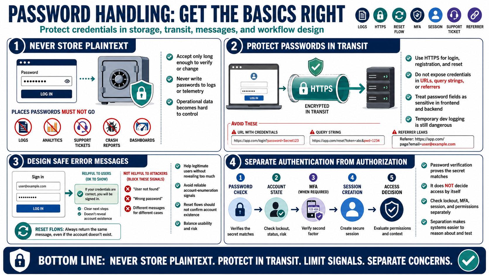

Password Handling Principles
Connecting to LMS... Progress: in progress

Narration
The first handling rule is simple: never store plaintext passwords. A password should be accepted only long enough to verify it, change it, or establish a new credential. It should not be written to application logs, analytics, telemetry, support tickets, debug dumps, crash reports, data warehouses, or administrative dashboards. Once a password lands in routine operational data, it becomes much harder to control.
Passwords must be protected in transit. Login, registration, and reset flows should use HTTPS and should avoid exposing credentials in URLs, query strings, referrer data, or client-side logs. Password fields should be handled as sensitive data in both frontend and backend code. Even temporary convenience logging during development is dangerous because those logs are often copied forward into shared tools or retained longer than expected.
Authentication error messages need care. A login response should help legitimate users without giving attackers a reliable account enumeration signal. Reset flows should be designed so that requesting a reset does not confirm whether an account exists. That does not mean every message must be vague to the point of being unusable. It means the product, support, and security teams should intentionally choose responses that balance usability and risk.
Password verification should also be separated from authorization and session management. Verifying a password proves that the presented secret matches the stored verifier. It does not decide which resources the user can access, whether the account is locked, whether MFA is required, or whether existing sessions should continue after a password change. Keeping these concerns separate makes the system easier to reason about and test.